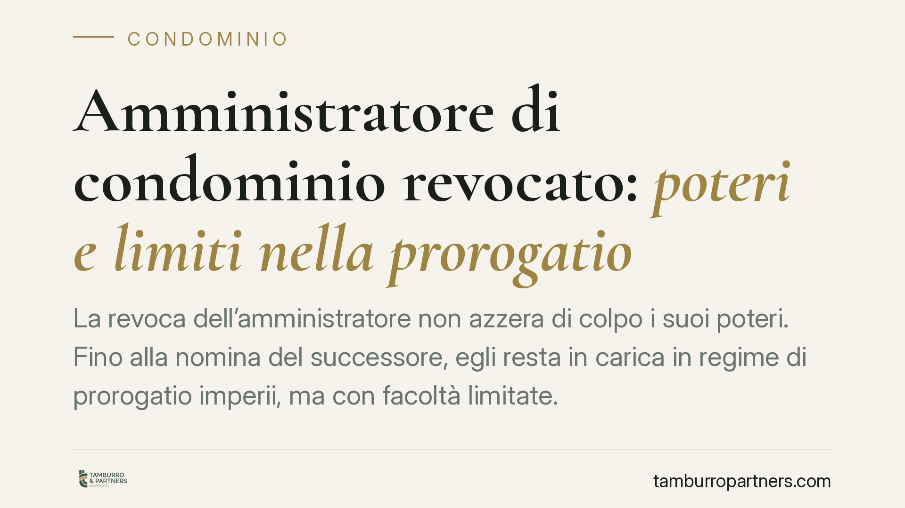

Amministratore di condominio revocato: poteri e limiti nella prorogatio
La revoca dell'amministratore non azzera di colpo i suoi poteri. Fino alla nomina del successore, egli resta in carica in regime di prorogatio imperii, ma con facoltà limitate. Capire quali atti può ancora compiere, quali obblighi ha e cosa spetta ai condòmini è essenziale per gestire il periodo transitorio senza contenzioso.

Il contesto: la revoca non chiude subito la gestione
Quando l'assemblea revoca l'amministratore, o quando la revoca è disposta dall'autorità giudiziaria, si apre una fase delicata: il condominio non può restare senza un centro di imputazione della gestione. Per evitare il vuoto, l'ordinamento riconosce all'amministratore uscente la permanenza in carica fino alla sostituzione. È il principio della *prorogatio imperii*.
Questa continuità non è un privilegio dell'amministratore, ma una tutela dei condòmini: garantisce che la gestione dei rapporti in corso non si interrompa bruscamente.
Inquadramento normativo
La disciplina di riferimento è l'art. 1129 cod. civ., che regola nomina, revoca, obblighi e durata dell'incarico dell'amministratore. Ai sensi dell'art. 1129, comma 10, cod. civ., l'incarico ha durata di un anno e si intende rinnovato per eguale periodo; la scadenza o la revoca non producono, di per sé, un immediato spossessamento delle funzioni.
La revoca giudiziale, in particolare, presuppone "gravi irregolarità" nella gestione, di cui l'art. 1129, comma 12, cod. civ. fornisce un elenco esemplificativo (omessa apertura del conto corrente condominiale, mancato rendiconto, gestione anomala delle spese, ecc.).
Quanto ai poteri residui, la prorogatio si àncora alla natura di mandato del rapporto: l'amministratore agisce con la diligenza del mandatario ex art. 1710 cod. civ. e, in fase di cessazione, resta tenuto agli obblighi di consegna della documentazione previsti dall'art. 1129, commi 8 e 9, cod. civ. In questa cornice, la giurisprudenza di legittimità è consolidata nel circoscrivere l'attività dell'amministratore in prorogatio agli atti necessari a non pregiudicare gli interessi comuni.
Cosa può (e non può) fare l'amministratore in prorogatio
La linea di confine è netta sul piano concettuale, meno nella pratica quotidiana. In sintesi:
- Atti di ordinaria amministrazione e atti urgenti o conservativi: sono consentiti. L'amministratore può pagare le utenze in scadenza, riscuotere i contributi, provvedere a interventi indifferibili a tutela della sicurezza dell'edificio, dare seguito a obbligazioni già assunte.
- Nuove iniziative discrezionali e atti di straordinaria amministrazione: non rientrano nella prorogatio. L'amministratore uscente non può avviare lavori straordinari non deliberati, stipulare nuovi contratti pluriennali o assumere impegni che vincolino la gestione futura.
Il criterio guida è la necessità: ciò che serve a conservare lo stato di fatto e a non interrompere i rapporti in corso è legittimo; ciò che introduce scelte nuove è precluso e spetta al nuovo amministratore, o all'assemblea.
Il nodo del compenso
Un punto ricorrente riguarda il diritto al compenso per l'attività svolta dopo la revoca. Secondo un orientamento della giurisprudenza di legittimità, coerente con la natura di mandato del rapporto, l'amministratore ha titolo a essere remunerato per l'attività effettivamente e legittimamente prestata nel periodo di prorogatio, purché contenuta entro i limiti degli atti consentiti.
La conseguenza pratica è duplice. Per l'amministratore: le prestazioni rese nel transitorio non sono necessariamente gratuite. Per il condominio: un ritardo nella nomina del successore prolunga la prorogatio e, con essa, l'esposizione economica. Ogni giorno senza nuovo amministratore è un giorno di gestione potenzialmente da compensare.
Implicazioni pratiche per il condominio
Per i condòmini il messaggio è chiaro: la revoca va accompagnata, il prima possibile, dalla nomina del sostituto. Lasciare l'incarico "aperto" non riduce i costi, li può aumentare, e mantiene la gestione in mano a un soggetto che si è deciso di sostituire.
È altrettanto importante distinguere, a consuntivo, le prestazioni legittimamente riconducibili alla prorogatio dagli eventuali atti eccedenti, che possono essere contestati.
Cosa fare in concreto
- Nominate rapidamente il nuovo amministratore: convocate l'assemblea senza attese per chiudere il periodo di prorogatio.
- Pretendete la consegna della documentazione: esigete dall'uscente la restituzione integrale di registri, rendiconti e documentazione contabile ex art. 1129, commi 8 e 9, cod. civ.
- Verificate le prestazioni fatturate nel transitorio: controllate che riguardino solo atti ordinari, urgenti o conservativi.
- Diffidate formalmente da atti straordinari: se l'amministratore uscente avvia nuove iniziative discrezionali, opponetevi per iscritto.
- Documentate la data della revoca e della nuova nomina: serve a delimitare con precisione il periodo remunerabile.
---
Contributo informativo a cura di Tamburro & Partners Avvocati - Avv. Giuseppe Tamburro. Non costituisce parere legale.
Ogni condominio ha una storia a sé.
Se gestisci un'amministrazione e vuoi un confronto su una specifica questione condominiale, scrivi allo studio. Ti rispondiamo entro un giorno lavorativo.